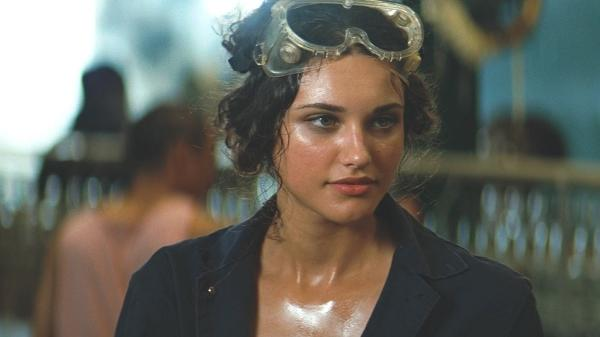
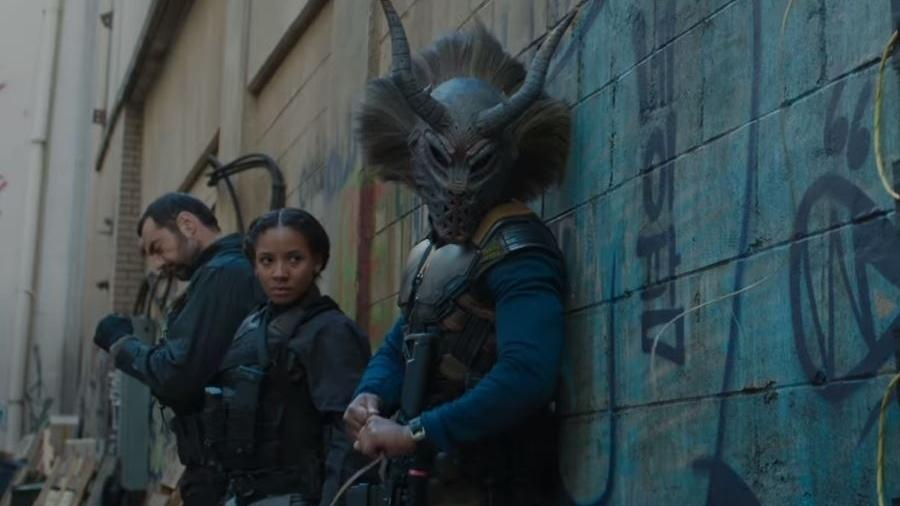
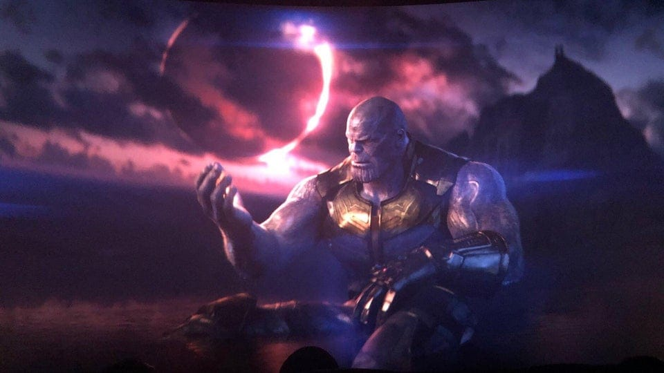
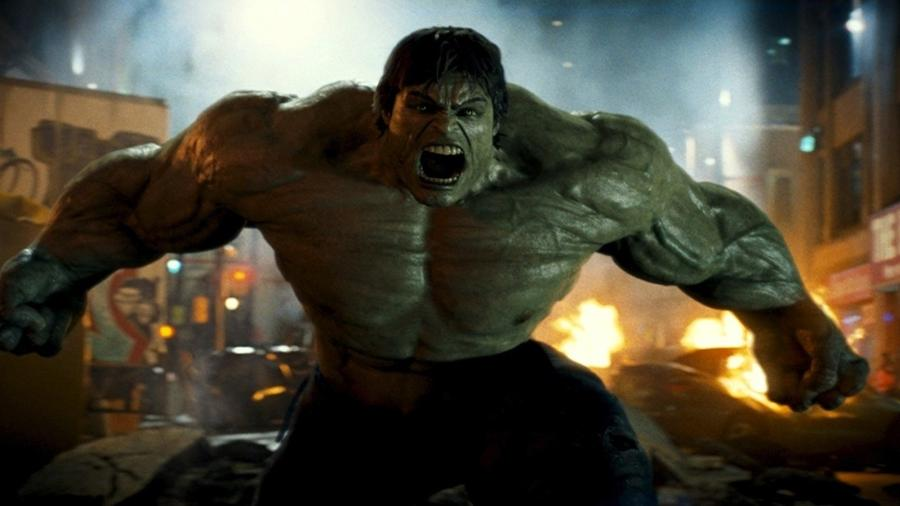

PARTICIPAÇÕES DO BRASIL NO UCM
O Universo Cinematográfico Marvel (UCM) já contou com diversas participações brasileiras.
ATRIZES BRASILEIRAS QUE PARTICIPARAM DE FILMES DA MARVEL
DÉBORA NASCIMENTO

O filme "O Incrível Hulk" (2008) tem a participação especial da atriz paulistana Débora Nascimento no papel de Martina.
NABIYAH BE

A cantora e atriz baiana Nabiyah Be que participou em uma das cenas do filme Pantera Negra, irá interpretar a vilã Tilda Johnson (conhecida como Sombra da Noite nos quadrinhos) no próximo filme.
LOCAIS DE GRAVAÇÕES UTILIZADOS PELA MARVEL NO BRASIL
MARANHÃO

Os Lençóis Maranhenses foram o cenário utilizado pela Marvel para criar o planeta Vormir (onde ficava no filme a joia da alma) em "Vingadores: Guerra Infinita".
RIO DE JANEIRO

No filme “O Incrível Hulk" (2008), Bruce Banner (Edward Norton) está escondido no Brasil e mora em uma favela do Rio de Janeiro.
REFERÊNCIAS
UOL. 25 curiosidades sobre o Universo Marvel nos cinemas. Disponível em: < https://www.bol.uol.com.br/listas/curiosidades-sobre-o-universo-marvel-nos-cinemas.htm>. Acesso em: 03 de dez. de 2019.
FILME FEED. Conheça filmes da Marvel que foram gravados no Brasil. Disponível em: < https://filmefeed.telecineplay.com.br/conheca-filmes-da-marvel-que-foram-gravados-no-brasil/p>. Acesso em: 03 de dez. de 2019.